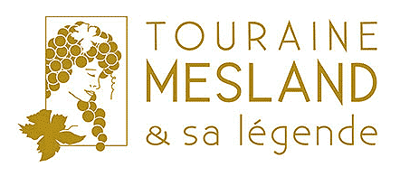
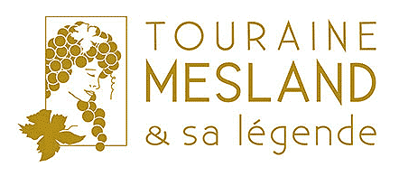

©Enola Création / ADT41
Découvrez l'AOC Touraine Mesland : L'Élégance du Loir-et-Cher en Bouteille
Cette appellation d'origine contrôlée, nichée sur les coteaux de la Loire, se distingue par un terroir exceptionnel, souvent composé de sables et d'argiles à silex (appelés localement "perruches") qui confèrent à ce vin son caractère unique.
Dégustez des vins raffinés :
Le Rosé : Un vin souvent dominé par le cépage emblématique Gamay (accompagné de Pinot Noir et de Côt), offrant une bouche fraîche, fruitée et légère, parfait pour les beaux jours.
Le Rouge : Élaboré principalement à partir de Côt (Malbec) et de Gamay, il révèle des arômes de fruits rouges et une belle souplesse.
Le Blanc : Issu du Chenin ou du Sauvignon, il exprime toute la minéralité de notre sol.
Chaque verre révèle le terroir unique de Touraine Mesland. Venez rencontrer des vignerons passionnés et partagez un moment d'authenticité et de plaisir au fil de la Loire.
 Poursuivez l'aventure et trouvez des adresses de dégustations

Poursuivez l'aventure et trouvez des adresses de dégustations
